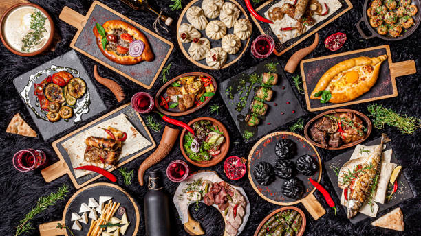

Vuelve Expo Placeres de Oriente, esta nueva edición propone un nuevo encuentro de comidas armenias destacadas.
Se llevará a cabo del miércoles 3 al miércoles 17 de Mayo, entre las 12hs y las 24hs, en la Rural predio ferial de exposiciones, con acceso por Plaza Italia (Avenida Santa Fe y Thames). La entrada será libre y gratuita.
Misión

Placeres de Oriente será más que una Exposición, mucho mas que un evento gastronómico, es una experiencia única para sus visitantes que se desprende en la posibilidad de comprar, desgustar y conocer en profundidad sus alimentos.
Sobre la exposición
Los visitantes podrán desgustar de las mejores combinaciones y sabores de la cocina Armenia en mas de 40 stands, incluyendo comidas vegetarianas y sin TACC. Para acompañar estos platos habrá un espcio con opciones de bebidas armenias, vinos, cerveza y coctería.
Otras propuestas con la que contará la exposición será la presentación de destacados cocineros del rubro, donde nos enseñaran una varidad de platos importantes.